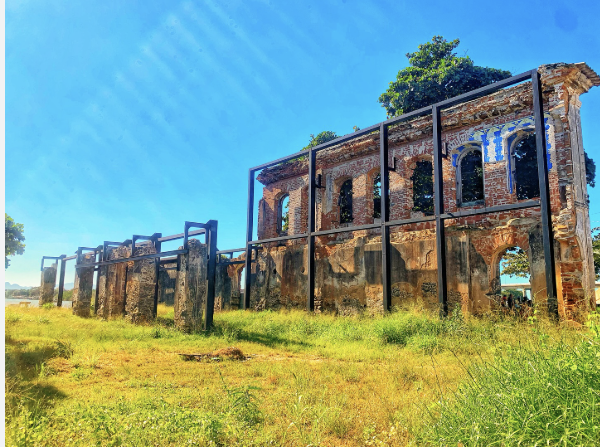

O Trapiche em Marataízes é um dos testemunhos mais fascinantes do passado industrial da cidade. Concluído em 1883 como usina elétrica — quando a eletricidade ainda era raridade no Brasil — suas ruínas contam uma história silenciosa de progresso, transformação e tempo.
Se você está buscando o que fazer em Marataízes além das praias, o Trapiche em Marataízes é uma parada obrigatória para quem gosta de história e fotografia.
Quando o Trapiche foi concluído em 1883, levar eletricidade a uma cidade era um feito extraordinário. Localizado estrategicamente perto do Palácio das Águias e do Porto da Barra, o prédio representava o avanço tecnológico da época. Embora em desuso desde 1950 e hoje em ruínas, cada pedaço que ainda está de pé conta uma história que a cidade não pode deixar esquecer.
A visita ao Trapiche em Marataízes vale a pena para quem tem interesse em história local. As ruínas convidam à reflexão — sobre o tempo, sobre o progresso e sobre o que uma cidade carrega em sua memória.
O Trapiche é concluído como usina elétrica — um dos primeiros equipamentos do tipo no litoral capixaba. Representa o avanço tecnológico e econômico de Marataízes na época.
A usina opera por décadas fornecendo energia para a cidade. Junto com o Porto da Barra e o Palácio das Águias, compõe o núcleo histórico e econômico de Marataízes.
Com a modernização da infraestrutura energética, o Trapiche é desativado. Começa um lento processo de abandono que transforma o prédio nas ruínas que podem ser vistas hoje.
Em ruínas, o Trapiche segue de pé como testemunho do passado. Visitado por curiosos, fotógrafos e amantes da história local — cada pedra conta uma parte da história de Marataízes.
O Trapiche faz parte de um roteiro histórico natural no centro de Marataízes. Visite os três pontos num único passeio:
O turismo em Marataízes vai muito além das praias. A cidade tem pontos históricos, lagoas e gastronomia que fazem parte da experiência completa.
Mais restaurantes e quiosques próximos ao Trapiche estão sendo organizados pela TV Marataízes.
Queremos indicar só o que realmente vale a pena pra quem visita a região.
Todos os dias, moradores e visitantes acessam o site buscando o que fazer em Marataízes e na região.
Sua empresa pode aparecer exatamente nesse momento — antes do concorrente.